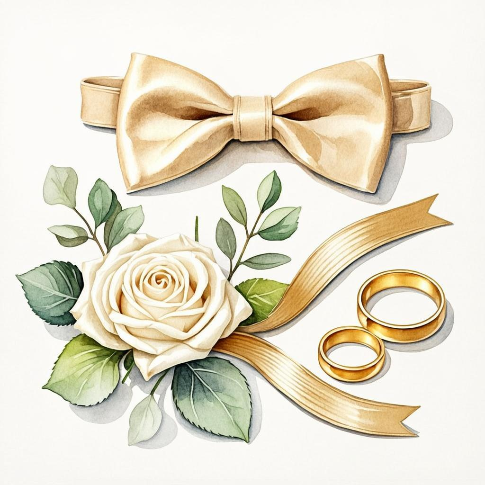

Фотограф и видеограф
Помоги подобрать съёмочную команду — ты знаешь лучших. Или, может быть, сам встанешь за камеру? Обсудим!

Личная страница · только для своихТы знаешь свадьбы изнутри как никто другой, поэтому именно тебе Илья доверяет самое важное: кольца, документы и спокойствие жениха. На этой странице — твой личный план и вопросы, которые мы хотим обсудить.
Свадьба Екатерины и Ильи · 27 февраля 2027
Шафер — это не просто статус на фото. Это человек, рядом с которым жених спокоен. Ты отвечаешь за мелочи, из которых складывается большой день: чтобы кольца были под рукой, гости — встречены, а тост — произнесён вовремя и от души.
А ещё ты — пфотограф, и мы зотим тебя припахать =)
Перед свадьбой предстоит решить немало вопросов
Помоги подобрать съёмочную команду — ты знаешь лучших. Или, может быть, сам встанешь за камеру? Обсудим!
Ищем уютное место. Будем рады проверенным вариантам, советам и совместным просмотрам.
Посоветуй мастера, которому доверяешь. Твоё профессиональное мнение для нас самое ценное.
Ориентировочно нас будет 35 человек. От этой цифры отталкиваемся при выборе площадки и команды.
Помочь собраться: бабочка, ремень, карманы. Принять кольца и документы на ответственное хранение.
Едете раньше гостей. Проверь: кольца? документы? телефон заряжен?
Встречай, подсказывай, где welcome-зона, знакомь гостей между собой.
Твой выход вместе с женихом. В нужный момент — кольца. Держи их крепко.
Общие кадры и прогулка. Кто, если не ты, проследит, чтобы в кадр попали все и никто не моргал?
Твой тост — после первого от родителей. Не затягивай: искренность короче шуток.
Подготовь гостей к встрече пары — и проверь, что у всех наготове телефоны: кадр должен остаться.
Помоги с проводами гостей, собери подарки и цветы. Ты — герой этого дня.
Иметь рядом друга, который знает свадьбы до мелочей, — большая удача. Просто будь рядом, и этот день станет идеальным. Спасибо, что ты с нами!
Вернуться на главную